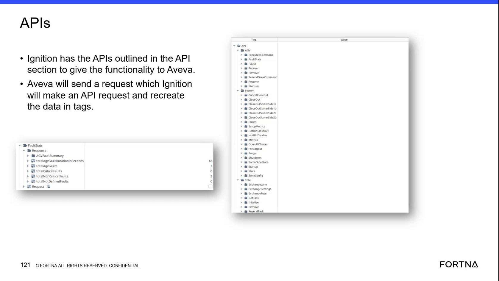

| Procedure ID | proc_cancel_active_exchanges_after_manual_bag_out_purge_close_recovery_v1 |
|---|---|
| Title | Cancel active exchanges after a manual bag out (purge/close recovery) |
| Procedure Type | recovery |
| Primary Role | L2_support |
| Support Safe | Yes |
| Capability Tags | bag_out_or_closeout_state, wcs_api_responsiveness |
| Access Surface | apidog, wcs_api |
| Audience Roles | L2_support |
| Failure Pattern Tags | api_unresponsive, system_fault |
| Validation Status | needs_sme_review |
| Merge Status | source_finalized |
After a manual bag out/back out was used because recovery took too long, and the system is back up and running, cancel the active exchanges that were marked by the bag out so operators don’t have to complete the remaining bag out exchange/tote processing.
Use when a manual bag out/back out occurred as a fallback because recovery took too long, and the system is now back up and running; then cancel active exchanges that were marked to exchange by the bag out.


Responsible role: L2_support
Instruction:
Confirm the situation matches a manual bag out/back out fallback (recovery took too long) and that the system is now back up and running before attempting to cancel active exchanges.
Expected result:
You have confirmation that (1) the event was a manual bag out/back out due to slow recovery and (2) the system is back up and running.
Stop or Escalate If:
Responsible role: L2_support
Instruction:
On the live API surface (Apidog / API Dog on a primary server), locate the cancel function described for canceling active exchanges after bag out and identify the request parameters needed for the cancel action.
Expected result:
You have identified the specific cancel endpoint/function in Apidog and the request parameters required to execute it.
Stop or Escalate If:
Responsible role: L2_support
Instruction:
Using Apidog on the primary server, execute the cancel request for the active exchanges created by the bag out event using the request parameters identified in the previous step.
Expected result:
The cancel request returns a successful response in Apidog.
Stop or Escalate If:
Responsible role: L2_support
Instruction:
Verify on the live exchange/exchange-request status view that active exchanges marked by the bag out are canceled after the cancel request.
Expected result:
Active exchanges that were marked by the bag out are canceled (i.e., they are no longer active).
Stop or Escalate If:
Responsible role: L2_support
Instruction:
If the cancel request fails or if exchange requests remain active after the cancel attempt, stop and escalate.
Expected result:
Escalation is triggered when cancel response is not successful or when exchanges remain active.
Stop or Escalate If: